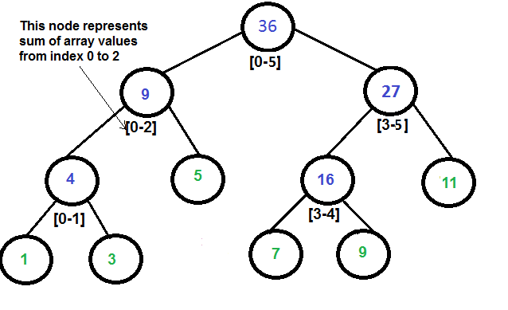

Copyright ©2018. All rights reserved. Created by CoDev
Ίσως η πιο σημαντική δομή δεδομένων! Πρέπει να μάθετε να την γράφετε τέλεια, γιατί θα σας λύσει τα χέρια. Καλό θα ήταν σε αυτό το κεφάλαιο να επιμείνετε πολύυυ καιρό (άνω του δίμηνου).
Λόγω των άπειρων εφαρμογών των Leaf-Oriented BST, θα σπάσουμε το κεφάλαιο σε 4 υποκεφάλαια:
Ας αναφέρουμε όμως πρώτα κάποια γενικά πράγματα που ισχύουν για όλα τα υποκεφάλαια. Η δομή αυτή μας επιτρέπει να τροποποιούμε τα στοιχεία μας και να απαντάμε ερωτήματα για πολλά στοιχεία (π.χ. τα μισά στοιχεία ενός πίνακα) σε O(logN) χρόνο! Για παράδειγμα μας επιτρέπει να αλλάξουμε σε 1025 την τιμή της θέσης 7, και να βρίσκουμε την ελάχιστη τιμή μεταξύ της θέσης 5 και της θέσης N-2, σε λογαριθμικό χρόνο. Ας την δούμε οπτικά πριν προχωρήσουμε: 
Η μοναδική απαίτηση για τα ερωτήματα είναι να είναι διαχωρίσιμα (Decomposable). Αυτό σημαίνει ότι αν μου χαρίσουν την απάντηση για το πρώτο μισό και την απάντηση για το δεύτερο μισό, μπορώ να τις συνδυάσω γρήγορα (συνήθως σε Ο(1)), και να πάρω τη συνολική απάντηση. Πολλά ερωτήματα είναι διαχωρίσιμα. Οι κλασικότερες εφαρμογές:
Ας αναφέρουμε και ένα χαρακτηριστικό παράδειγμα μη-διαχωρίσιμου ερωτήματος, την εύρεση του πλήθους διαφορετικών αριθμών. Βλέπουμε ότι οι πίνακες [3,5,25,1] και [3,5,23,3] δίνουν ίδιες απαντήσεις αριστερά και δεξιά (όλες ίσες με 2), αλλά η συνολική απάντηση διαφέρει (4 και 3 αντιστοίχως). Εδώ δεν εφαρμόζουμε Leaf-Oriented BST.
Τονίζουμε ότι δε θα δούμε κάποια καινούρια δομή δεδομένων! Παρότι ψευδώς κυκλοφορεί με το όνομα Segment Tree ή και Interval Tree στους κύκλους των competitive programmers (και μόνο έτσι θα βρείτε πηγές), η αλήθεια είναι ότι πρόκειται απλώς για ένα δέντρο που η πληροφορία βρίσκεται στα φύλλα του. Περισσότερα για αυτό στο πρώτο από τα υποκεφάλαια.
Υποσημείωση (πλήρως άχρηστη για διαγωνισμούς): Οι ονομασίες Segment Tree και Interval Tree δεν είναι απλώς περιττές, αλλά λανθασμένες, καθώς υπάρχουν ήδη 2 δομές δεδομένων με αυτά τα ονόματα (βλέπε εδώ) που απαντούν ερωτήματα σχετικά με ευθύγραμμα τμήματα (τα Segment Trees ερωτήματα δύο διαστάσεων, τα Interval Trees μίας διάστασης). Παρόλα αυτά κρατάμε στο νου μας την ονομασία Segment Tree για να μπορούμε να συνεννοηθούμε με όσους το ξέρουν έτσι (όλους).